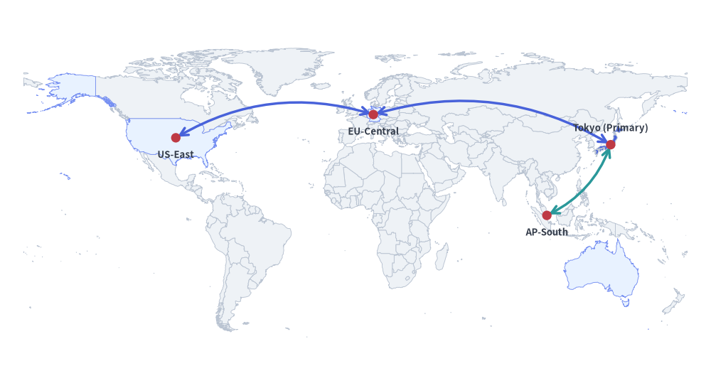
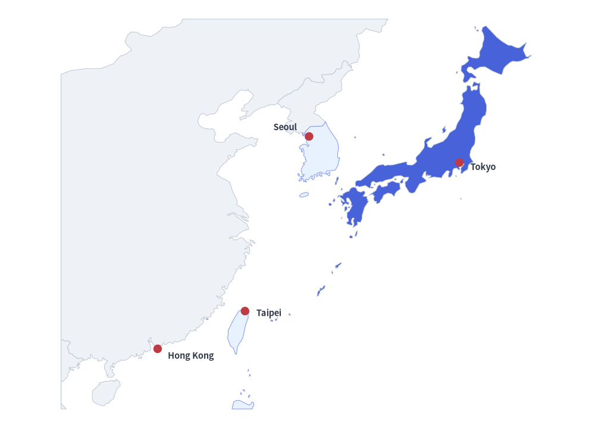
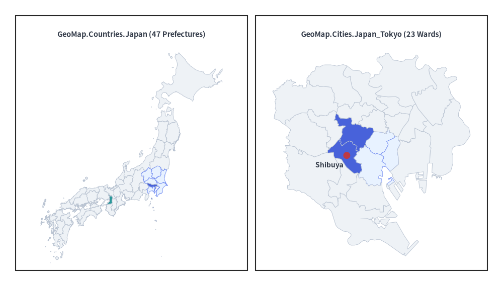
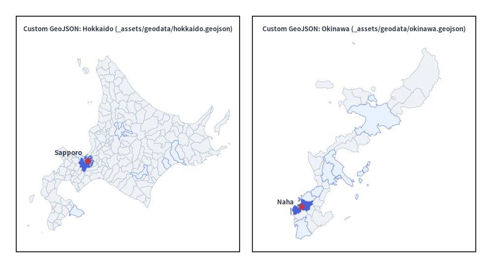

GeoMap Component
The GeoMap component renders vector geographical maps (GeoMap.World.*, GeoMap.Countries.*, GeoMap.Cities.*, or custom GeoJSON files) directly onto the Drawlib canvas without requiring heavy external GIS dependencies.
By combining GeoMap with get_area_xy() and lonlat_to_xy(), you can overlay standard Drawlib shapes, icons, text labels, and curved arrows to build multi-region cloud topology diagrams, regional expansion maps, and territory highlights.

Source Code
from drawlib.canvas import setup
from drawlib.lines import line_curved
from drawlib.shapes import circle
from drawlib.smartarts import GeoMap
from drawlib.styles import Styles
from drawlib.text import text
setup(width=130, height=70)
world = GeoMap(GeoMap.World.All, area_style=Styles.Neutral)
# Use world.get_areas() to inspect all available country/area names
world.set_area_styles(["United States", "Germany", "Singapore", "Australia"], Styles.PrimaryNeutral)
world.set_area_styles(["Japan"], Styles.PrimaryFlat)
world.draw(xy=(4, 4), width=122, height=62)
jp_xy = world.get_area_xy("Japan")
us_xy = world.get_area_xy("United States")
de_xy = world.get_area_xy("Germany")
sg_xy = world.get_area_xy("Singapore")
line_curved(us_xy, de_xy, bend=-0.22, arrow_head="<->", style=Styles.PrimaryBold)
line_curved(de_xy, jp_xy, bend=-0.22, arrow_head="<->", style=Styles.PrimaryBold)
line_curved(jp_xy, sg_xy, bend=-0.20, arrow_head="<->", style=Styles.SecondaryBold)
for label, pt, dy in [
("Tokyo (Primary)", jp_xy, 3.5),
("US-East", us_xy, -3.5),
("EU-Central", de_xy, -3.5),
("AP-South", sg_xy, -3.5),
]:
circle(pt, radius=1.0, style=Styles.DangerFlat)
text((pt[0], pt[1] + dy), label, style=Styles.DarkBold.patch(text_size=10.5))
1. Global Multi-Region Topology (GeoMap.World.All)
As shown in the global topology map above, pass GeoMap.World.All to GeoMap to render a complete world map. You can inspect all available area names via get_areas(), highlight specific areas with set_area_styles() (by English name, ISO code such as "JP" / "USA", or Japanese name such as "日本"), and use get_area_xy() to anchor connectors and labels:
world = GeoMap(GeoMap.World.All, area_style=Styles.Neutral)
world.set_area_styles(["United States", "Germany", "Singapore", "Australia"], Styles.PrimaryNeutral)
world.set_area_styles(["Japan"], Styles.PrimaryFlat)
world.draw(xy=(4, 4), width=122, height=62)
jp_xy = world.get_area_xy("Japan")
2. Regional World Presets & Cropping (GeoMap.World.Asia, EastAsia, Europe)
GeoMap.World provides 11 continental and regional presets (All, Asia, Europe, NorthAmerica, SouthAmerica, Africa, Oceania, EastAsia, SoutheastAsia, APAC, MiddleEast).
You can also initialize any map with area_style=Styles.Transparent so unstyled areas are hidden, style only the target countries via set_area_styles(), and refine the viewport with lon_range and lat_range.
from drawlib.canvas import setup
from drawlib.shapes import circle
from drawlib.smartarts import GeoMap
from drawlib.styles import Styles
from drawlib.text import text
setup(width=125, height=90)
# Hide all unstyled areas with Styles.Transparent
asia = GeoMap(GeoMap.World.Asia, area_style=Styles.Transparent)
# Style only the areas to display (inspect available names with asia.get_areas())
asia.set_area_styles(["China", "North Korea", "Vietnam"], Styles.Neutral)
asia.set_area_styles(["South Korea", "Taiwan", "Philippines"], Styles.PrimaryNeutral)
asia.set_area_styles(["Japan", "Hong Kong"], Styles.PrimaryFlat)
# Crop to East Asia (from Hong Kong to Japan)
asia.draw(
xy=(5, 4),
width=115,
height=82,
lon_range=(106, 146),
lat_range=(18, 46),
)
# Place city pins using exact (longitude, latitude) coordinates
for label, lon, lat, dx, dy in [
("Tokyo", 139.69, 35.69, 5.0, -1.0),
("Seoul", 126.98, 37.57, -5.0, 2.0),
("Taipei", 121.56, 25.03, 5.0, -0.5),
("Hong Kong", 114.17, 22.32, 7.0, -1.5),
]:
px, py = asia.lonlat_to_xy(lon, lat)
circle((px, py), radius=0.9, style=Styles.DangerFlat)
text((px + dx, py + dy), label, style=Styles.DarkBold.patch(text_size=10.5))

3. Country & City Presets (GeoMap.Countries.* & GeoMap.Cities.*)
Use GeoMap.Countries.<Country> for Admin-1 state/province/prefecture maps across 215 countries (such as GeoMap.Countries.Japan, GeoMap.Countries.UnitedStates, GeoMap.Countries.Germany) and GeoMap.Cities.<Country>_<City> for flagship metropolitan ward/district maps (such as GeoMap.Cities.Japan_Tokyo, GeoMap.Cities.UnitedStates_NewYork).
When area_style=Styles.Transparent is used and only a subset of areas is styled via set_area_styles() (such as Tokyo's 23 wards excluding Tama and the islands), GeoMap.draw() automatically zooms and fits the viewport to the visible areas even without specifying lon_range / lat_range.
from drawlib.canvas import setup
from drawlib.shapes import circle, rectangle
from drawlib.smartarts import GeoMap
from drawlib.styles import Styles
from drawlib.text import text
setup(width=130, height=74)
# Left Panel: Japan (highlight Kanto prefectures, Tokyo, and Osaka)
rectangle((34, 37), width=60, height=66, style=Styles.White)
text((34, 65), "GeoMap.Countries.Japan (47 Prefectures)", style=Styles.DarkBold.patch(text_size=10.5))
jp = GeoMap(GeoMap.Countries.Japan, area_style=Styles.Neutral)
# jp.get_areas() -> ['Hokkaido', 'Aomori', ..., 'Tokyo', ..., 'Okinawa']
jp.set_area_styles(
["Ibaraki", "Tochigi", "Gunma", "Saitama", "Chiba", "Kanagawa"],
Styles.PrimaryNeutral,
)
jp.set_area_styles(["Tokyo"], Styles.PrimaryFlat)
jp.set_area_styles(["Osaka"], Styles.SecondaryFlat)
jp.draw(xy=(6, 6), width=56, height=56, lon_range=(129, 146), lat_range=(30, 46))
# Right Panel: Tokyo 23 Wards (hide Tama & islands via Styles.Transparent)
rectangle((96, 37), width=60, height=66, style=Styles.White)
text((96, 65), "GeoMap.Cities.Japan_Tokyo (23 Wards)", style=Styles.DarkBold.patch(text_size=10.5))
tokyo = GeoMap(GeoMap.Cities.Japan_Tokyo, area_style=Styles.Transparent)
# tokyo.get_areas() -> ['Chiyoda', 'Chuo', 'Minato', ..., 'Hachioji', ...]
wards_23 = [
"Chiyoda", "Chuo", "Minato", "Shinjuku", "Bunkyo", "Taito",
"Sumida", "Koto", "Shinagawa", "Meguro", "Ota", "Setagaya",
"Shibuya", "Nakano", "Suginami", "Toshima", "Kita", "Arakawa",
"Itabashi", "Nerima", "Adachi", "Katsushika", "Edogawa",
]
tokyo.set_area_styles(wards_23, Styles.Neutral)
tokyo.set_area_styles(["Chiyoda", "Chuo", "Minato"], Styles.PrimaryNeutral)
tokyo.set_area_styles(["Shinjuku", "Shibuya"], Styles.PrimaryFlat)
tokyo.draw(xy=(68, 6), width=56, height=56)
shibuya_xy = tokyo.get_area_xy("Shibuya")
circle(shibuya_xy, radius=0.9, style=Styles.DangerFlat)
text((shibuya_xy[0] - 4.5, shibuya_xy[1] - 2.5), "Shibuya", style=Styles.DarkBold.patch(text_size=10.0))

4. Custom GeoJSON Files (_assets/geodata/*.geojson)
In addition to built-in presets, you can pass any .geojson file path (or parsed GeoJSON dictionary) to GeoMap. The example below loads custom municipal GeoJSON files from _assets/geodata/hokkaido.geojson and _assets/geodata/okinawa.geojson.
from drawlib.canvas import setup
from drawlib.shapes import circle, rectangle
from drawlib.smartarts import GeoMap
from drawlib.styles import Styles
from drawlib.text import text
setup(width=130, height=74)
# Left Panel: Hokkaido Municipalities (_assets/geodata/hokkaido.geojson)
rectangle((34, 37), width=60, height=66, style=Styles.White)
text((34, 65), "Custom GeoJSON: Hokkaido (hokkaido.geojson)", style=Styles.DarkBold.patch(text_size=10.0))
hokkaido = GeoMap("_assets/geodata/hokkaido.geojson", area_style=Styles.Neutral)
sapporo_wards = [a for a in hokkaido.get_areas() if a in {
"Chuo", "Kita", "Higashi", "Shiroishi", "Toyohira",
"Minami", "Nishi", "Atsubetsu", "Teine", "Kiyota",
}]
hokkaido.set_area_styles(["Asahikawa", "Hakodate", "Obihiro", "Kushiro", "Otaru"], Styles.PrimaryNeutral)
hokkaido.set_area_styles(sapporo_wards, Styles.PrimaryFlat)
hokkaido.draw(xy=(6, 6), width=56, height=56, lon_range=(139.3, 145.9), lat_range=(41.3, 45.6))
sp_xy = hokkaido.get_area_xy("Chuo")
circle(sp_xy, radius=0.9, style=Styles.DangerFlat)
text((sp_xy[0] - 6.0, sp_xy[1] + 2.5), "Sapporo", style=Styles.DarkBold.patch(text_size=10.0))
# Right Panel: Okinawa Main Island (_assets/geodata/okinawa.geojson)
rectangle((96, 37), width=60, height=66, style=Styles.White)
text((96, 65), "Custom GeoJSON: Okinawa (okinawa.geojson)", style=Styles.DarkBold.patch(text_size=10.0))
okinawa = GeoMap("_assets/geodata/okinawa.geojson", area_style=Styles.Neutral)
okinawa.set_area_styles(["Nago", "Uruma", "Okinawa", "Urasoe", "Ginowan", "Itoman"], Styles.PrimaryNeutral)
okinawa.set_area_styles(["Naha"], Styles.PrimaryFlat)
okinawa.draw(xy=(68, 6), width=56, height=56, lon_range=(127.6, 128.35), lat_range=(26.05, 26.9))
naha_xy = okinawa.get_area_xy("Naha")
circle(naha_xy, radius=0.9, style=Styles.DangerFlat)
text((naha_xy[0] - 5.0, naha_xy[1] + 1.5), "Naha", style=Styles.DarkBold.patch(text_size=10.0))

5. Preset Targets & Area Discovery
Built-in Presets
from drawlib.smartarts import GeoMap
| Category | Preset Targets | Description |
|---|---|---|
GeoMap.World |
All, Asia, Europe, NorthAmerica, SouthAmerica, Africa, Oceania, EastAsia, SoutheastAsia, APAC, MiddleEast |
Global & regional country maps |
GeoMap.Countries |
All 215 countries & territories (Japan, UnitedStates, UnitedKingdom, Germany, France, China, India, Australia, Brazil, Canada, ...) |
Admin-1 states, provinces, or prefectures |
GeoMap.Cities |
Australia_Sydney, China_HongKong, China_Shanghai, France_Paris, Germany_Berlin, Italy_Rome, Japan_Kyoto, Japan_Osaka, Japan_Tokyo, Singapore_Singapore, SouthKorea_Seoul, Taiwan_Taipei, UnitedKingdom_London, UnitedStates_LosAngeles, UnitedStates_NewYork, UnitedStates_SanFrancisco |
16 flagship metropolitan ward/district maps |
| Custom GeoJSON | "_assets/geodata/okinawa.geojson" (path or dict) |
Any standard GeoJSON FeatureCollection |
Inspecting Available Area Names (get_areas())
You can inspect all canonical area names in any map programmatically:
m = GeoMap(GeoMap.Countries.Japan)
print(m.get_areas()) # ['Hokkaido', 'Aomori', ..., 'Tokyo', ..., 'Okinawa']
Alias Resolution: Methods accepting area names (
set_area_styles(),get_area_xy()) are case-insensitive and also accept ISO codes ("JP","JPN","US") as well as Japanese names ("日本","東京都","東京","渋谷区","渋谷").
6. API Reference
Constructor
GeoMap(
target: World | type[World] | Countries | Cities | str | Path | dict[str, Any],
*,
area_style: Style | None = None,
background_style: Style | None = None,
id_key: str | None = None,
name_key: str | None = None,
)
target: Preset (GeoMap.World.All,GeoMap.World.Asia,GeoMap.Countries.Japan,GeoMap.Cities.Japan_Tokyo), path to a.geojsonfile, or a parsed GeoJSONdict.area_style: DefaultStyleapplied to all areas (defaults toStyles.Neutral). PassStyles.Transparentto hide unstyled areas.background_style: OptionalStylefor the map bounding box background (defaults toNonefor transparent background).id_key: Optional GeoJSON featurepropertieskey to use as the canonical area identifier when loading custom GeoJSON files or dicts.name_key: Optional GeoJSON featurepropertieskey to use as the area display name when loading custom GeoJSON files or dicts.
Methods & Properties
geomap.data -> GeoData: Returns the underlying normalizedGeoDatamodel containing the parsed map elements (elements), dataset name (name), and default viewport bounds (default_lon_range,default_lat_range).get_areas() -> list[str]: Return the ordered list of canonical area names in this map.set_area_styles(areas: list[str], style: Style) -> Self: Assign aStyleto the specified list of areas (passStyles.Transparentto hide specific areas).draw(xy=(0.0, 0.0), width=None, height=None, *, lon_range=None, lat_range=None, scale=1.0) -> Self:- Bottom-Left Anchor
xy: Bottom-left(x, y)coordinate of the map box on the canvas. - Aspect-Ratio Safe Sizing (
width,height): Providewidth,height, or both. The map preserves its natural geographical aspect ratio (with cosine-latitude correction) and centers itself within the box when bothwidthandheightare specified. - Viewport Cropping (
lon_range,lat_range): Optional(min_lon, max_lon)and(min_lat, max_lat)tuples to crop and zoom into a specific region. When omitted,draw()automatically fits the viewport to all visible (non-transparent) areas.
- Bottom-Left Anchor
get_area_xy(area: str) -> tuple[float, float]: Returns the canvas(x, y)coordinate of the area's largest-polygon interior center from the most recentdraw()call.lonlat_to_xy(lon: float, lat: float) -> tuple[float, float]: Converts any(longitude, latitude)pair into canvas(x, y)coordinates from the most recentdraw()call.